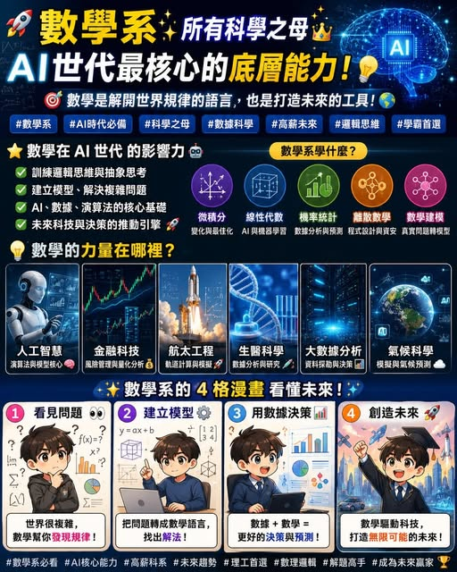

《看懂制度，選對世界》第一集
數學系：未來 AI 世代的重要基礎
談 資料參考：世界經濟論壇 2025 報告把 AI、Big Data、科技素養列為快速升溫技能群；美國 BLS 預估 2024–2034 年資料科學家就業成長 34%，數學家與統計學家成長 8%；

【數學系 未來AI世代的神 】 談 資料參考：世界經濟論壇 2025 報告把 AI、Big Data、科技素養列為快速升溫技能群；美國 BLS 預估 2024–2034 年資料科學家就業成長 34%，數學家與統計學家成長 8%；南洋理工大學 DSAI 學程也把統計、運算與 AI 訓練放在同一學位架構中。AI 背後的語言，靠的仍然是數學。大型語言模型、機器學習、推薦系統、金融風控、醫療影像、半導體製程、量化交易、精算模型，表面上看起來是科技產業，其實核心都離開數學太遠就難以深入。數學系，並非單純算題目。
它訓練的是一個人把混亂問題變成公式、模型、邏輯與推論的能力。. AI 越強，越需要懂數學的人 很多學生以為 AI 工具會讓數學變得沒那麼重要，方向其實相反。AI進化的問題最後都會回到數學。線性代數：AI 模型、影像辨識、向量資料庫 微積分：深度學習、最佳化、梯度下降 機率統計：資料分析、風險預測、A/B 測試 離散數學：演算法、密碼學、資訊安全 數學建模：金融、醫療、交通、能源、商業決策 AI 世代缺的，是能判斷工具結果、設計模型、拆解問題的人。
. 數學系的出路，已經比過去更寬 過去談到數學系，很多人第一印象是老師、研究所、考公職。今天的數學系，已經跟 AI、資料科學、金融科技、精算、半導體、軟體工程接軌。數學系學生未來可以往這些方向走： 1 Data Science 用統計、機器學習與資料分析，協助企業做決策。2 AI / Machine Learning 研究模型、演算法、最佳化與資料結構。3 FinTech 進入量化交易、風險模型、投資分析、信用評分。4 Actuarial Science 用機率與統計計算保險、退休金與長期風險。
5 處理製程資料、良率分析、最佳化與模擬。6 用離散數學、數論與演算法保護資料安全。數學像一把萬用鑰匙。它可以連接 AI、金融、工程、精算、研究與教育。在科技快速變動的時代，數學系給學生的核心資產，就是思考深度與跨領域轉換能力。